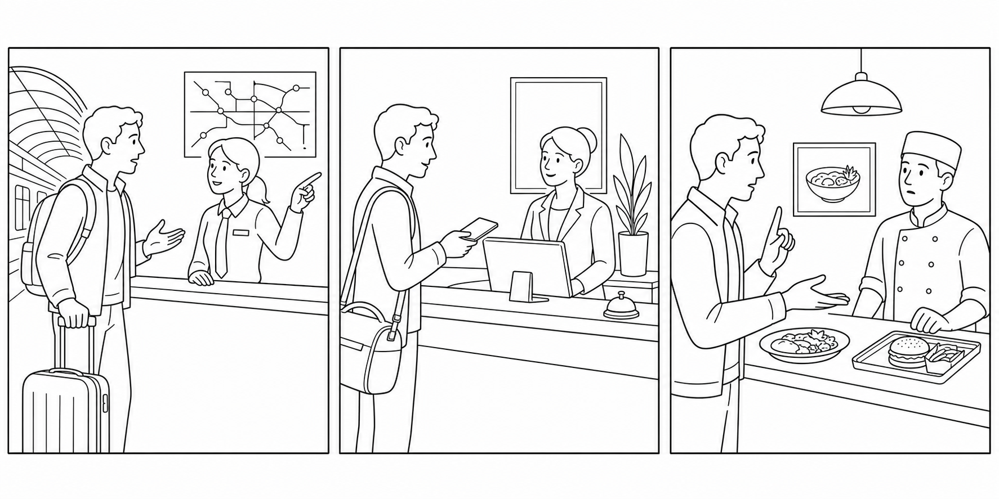

B4 Speaking Mission Exam
Complete two realistic survival-English missions. Your goal is not perfect English. Your goal is to communicate, respond, solve the situation, and keep the conversation alive.

- The examiner gives you two mission cards.
- You receive about one minute to prepare each card. You may write keywords, not a full script.
- You complete each roleplay and answer follow-up questions.
- The examiner may intentionally speak quickly or give one unclear detail. Use repair language.
- Your individual score is out of 100, even when you test with a partner.
| Scored area | Points | What it means |
|---|---|---|
| Communication | 30 | Complete the mission and make the main message understandable. |
| Understands and responds | 20 | Answer questions and react to new information. |
| Target language | 20 | Use useful B4 grammar, vocabulary, and survival phrases. |
| Pronunciation and clarity | 15 | Speak clearly enough to be understood. |
| Repair language | 15 | Ask for repetition, clarification, confirmation, or slower speech. |
| Total | 100 | Performance score |
Could you repeat that? · Could you speak more slowly? · I don't understand the last part. · What does ___ mean? · Can you write that down? · Do you mean ___? · So I need to ___, right?
A Simple Mission Strategy
- Open: greet the person and state why you need help.
- Explain: give the main problem or purpose.
- Detail: answer who, what, where, when, or what you have tried.
- Request: ask for a concrete action or option.
- Confirm: repeat the solution, time, place, or next step.
Recommended format: one examiner with one student for 6–8 minutes, or one examiner with a pair for 10–12 minutes. Assign two missions per student. At least one must be a problem-solving mission (1, 2, 4, or 5). Use a different card order for neighboring candidates.
Consistency: ask two follow-up questions per mission and introduce one repair opportunity across the exam. Do not coach, translate, or supply the target phrase. If safety is mentioned in the pharmacy mission, keep the roleplay educational and direct the candidate toward professional help.
Airport: Your Suitcase Did Not Arrive
You are at the baggage-service desk. Your black suitcase has not arrived. You last saw it when you checked in. It contains clothes and important medication. Explain the problem, answer questions, ask what will happen next, and confirm how and when the airline will contact you.
Ask: “What does the suitcase look like?” and “When did you last see it?” Offer: complete a form; bag may arrive tonight; delivery to hotel. Repair opportunity: say the delivery time quickly once. Listen for Present Perfect + Simple Past, practical detail, request, and confirmation.
Pharmacy: Explain Your Symptoms
You have had a headache and sore throat since yesterday. You have already drunk water and rested, but you do not feel better. You are allergic to aspirin. Explain the symptoms, answer basic questions, ask whether you need a prescription, and confirm how to use the recommended product.
Ask: “How long have you felt like this?” and “Have you taken anything?” Acknowledge the allergy and recommend that the student check the label and follow a professional's instructions. Give a simple fictional instruction such as “use the throat lozenge every four hours” solely to test confirmation. Do not give real medical advice.
Directions: Find the Right Place
You need a place where you can replace a lost travel card. You do not know the name of the office. Describe the place or person you need, ask for directions from the station, and confirm the route and opening time.
Ask: “What do you need to do there?” Give a three-step route and an opening time. Make one direction deliberately unclear so the candidate can request repetition or confirm. Listen for relative clauses, for/to purpose, and accurate route confirmation.
Hotel: Your Room Is Not Ready
You booked and paid for a quiet room, but you have been told that it is not ready. You have an online meeting in one hour. Explain what was booked, report what the first receptionist told you, ask for two possible solutions, choose one, and confirm the time.
Ask: “What were you told?” and “Why do you need the room now?” Offer two options: luggage storage plus a quiet meeting room now, or a different room in 30 minutes. Ask the candidate to choose and confirm. Listen for passive/result language, reported speech, and decision-making.
Customer Service: Your Card Was Charged Twice
Your card was charged twice for a restaurant order. You noticed after you had checked your bank app. You have the receipt. Explain the sequence, show your evidence, request a refund, and confirm when it will appear.
Ask: “When did you notice?” and “What evidence do you have?” Offer a refund within five business days and ask the candidate to confirm an email address. Say the time frame quickly once to create a repair opportunity if one has not occurred elsewhere.
Individual Speaking Rubric · 100 Points
| Area | Strong | Developing | Limited | Score |
|---|---|---|---|---|
| Communication · 30 | 26–30: completes both missions; main ideas and requests are clear | 19–25: completes most steps; some support needed | 0–18: isolated information; mission often incomplete | ____ / 30 |
| Understands/responds · 20 | 17–20: answers and reacts to follow-ups appropriately | 12–16: understands core questions with repetition | 0–11: responses are often unrelated or absent | ____ / 20 |
| Target language · 20 | 17–20: useful B4 phrases/forms support meaning consistently | 12–16: some useful target language; errors rarely block meaning | 0–11: very limited range or errors frequently block meaning | ____ / 20 |
| Pronunciation/clarity · 15 | 13–15: understandable, audible, manageable pauses | 9–12: generally understandable with occasional strain | 0–8: clarity frequently blocks understanding | ____ / 15 |
| Repair language · 15 | 13–15: independently repairs, clarifies, or confirms | 9–12: uses at least one useful repair with some prompting | 0–8: gives up, switches language, or does not attempt repair | ____ / 15 |
| Total | ____ / 100 |
Before exam day:
- Print candidate cards separately from examiner sheets.
- Brief evaluators with the rubric and score two sample performances together.
- Prepare a quiet station, timer, card rotation, and waiting-room review task.
- Decide whether candidates test individually or in pairs; never give a shared score.
Standard examiner script: “Hello. You will complete two short missions. You may ask me to repeat or speak more slowly. Mistakes are okay; keep communicating. You have one minute to read your first card and write keywords. Ready?” After the first mission: “Thank you. Now let’s move to the second situation.” At the end: “Thank you. The exam is complete.”
Fairness rules:
- Use the same number of follow-up questions and repair opportunities for all candidates.
- Do not correct language during the performance.
- Do not lower pronunciation scores for accent; score intelligibility.
- Record observable evidence before choosing a band.
- If two evaluators differ by more than 10 points, review the evidence together.
- Offer an accessible alternative format when a documented need makes the standard procedure inappropriate.
Semester grade: Final grade = (Foundation Test 1 × 0.30) + (Foundation Test 2 × 0.30) + (Speaking Mission Exam × 0.40).